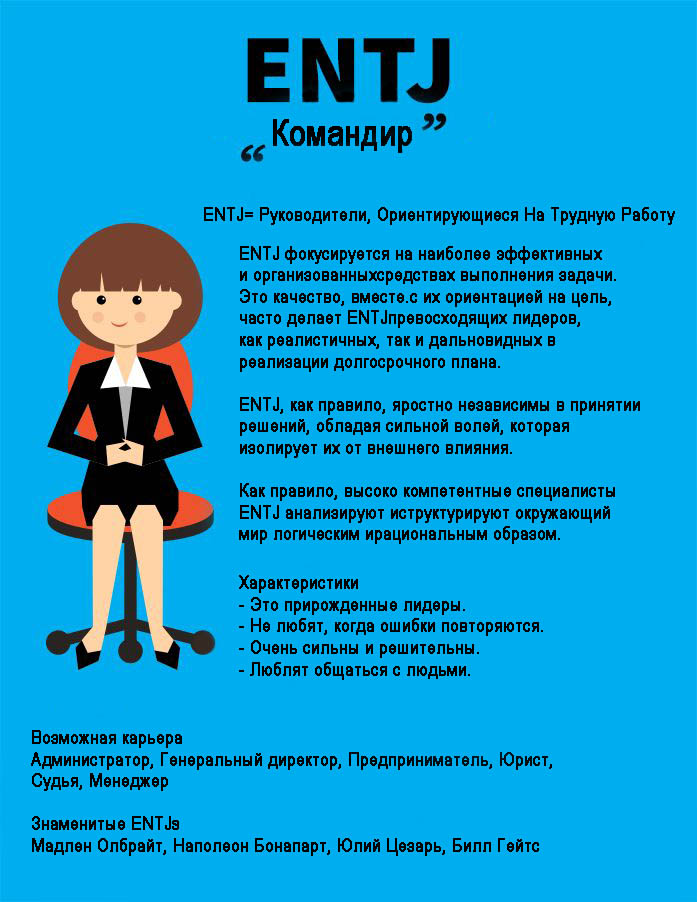

Командир – еще один характер человека. Представители данного типа характера — врожденные лидеры, чьи знания вызывают доверие и уважение окружающих. Логика - основа их характера и дозволяет им объективно расценивать происходящее, обдумывать всегда плюсы и минусы и только спустя этого принимать эффективное, здравое, хоть временами и жесткое решение. Особенно, командиры предпочитают откровенность и прямоту, постоянно предпочитая не шествовать вокруг до около, а немедленно пускаться к делу.
Но как бы то ни было, из-за того, что основной функцией их характера. являются эмоции, эти люди абсолютно не понимают, как их поступки могут воздействовать на окружающих. Большинство командиров настолько удалены от мира эмоций, что частенько становятся совершенно безучастными к желаниям и ощущениям других людей. Нечаянно они могут вести себя грубо, осуждающе и высокомерно по отношению к людям, не так быстро понимающим суть дела или просто занимающим противоположную позицию. Командиры также имеют тенденцию к лидерству, временами, элементарно, принуждая других принять их точку зрения.
Постоянно спеша завершить начатое и взяться за новую работу, этот характер может забыть поблагодарить или оценить по достоинству роль, какую играли в выполнении их проблем остальные люди. Награжденные стратеги, эти люди готовы трезво расценивать создавшееся положение, и предвидеть, каким образом их воздействия могут повлиять на формирование событий. Располагающие творческим и новаторским строем ума, они смело принимают решения, исключительно касающиеся к труднейшим задачам и проблемам. Нипочем не поддаваясь панике, командиры вызывают доверие людей, располагая властолюбивую и частенько внушающую, почтительный трепет, внешность. Болезненно устремляясь к приобретению знаний, этот характер постоянно ищет методы расширять свои познания, тем самым увеличивая свою подготовленность и способность воздействовать на людей.
Безумно дружелюбные, откровенные и энергичные, они постоянно предпочитают находиться в центре событий, свободно справляясь с синхронным решением нескольких задач. Всегда очень точные, без труда выступающие экспромтом, командиры могут стать замечательными ораторами. Владеющие таким видом характера, обычно ни в коей мере не стесняются поделиться своими мыслями либо выразить свои убеждения, притом одновременно по нескольким вопросам. Но по первопричине настолько сильного желания завершить одно дело и приступить к выполнению последующего они могут отводить мало времени для того, чтобы обдумать и рассчитать все последствия своих действий. Командиры также могут очень сильно удивиться, узнав, что их идеи принимаются с гораздо маленьким энтузиазмом, чем они ожидали.
Люди данного типа характера зачастую строят себе карьеру. Организованные и трудолюбивые, командиры любят действовать и с радостью принимают на себя самые проблемные задачи, частенько считая, что чем они сложнее, тем лучше. В итоге того, что они талантливы и изобретательны, их планы обычно, проделываются и аж перевыполняются. Но иногда, уже идя к какой-нибудь цели, командиры отказываются или оказываются не в состоянии скорректировать свои планы и загореться чем-нибудь другим, даже если результат станется больше. У людей данного типа характера временами возникают трудности при нахождении баланса между службой и собственной жизнью: временами они бывают настолько поглощены своей работой, что могут принести в жертву карьеры семью и личную жизнь. Неудивительно, что некоторые обладатели такого характера ближе к 30 годам пересматривают всю свою систему ценностей.